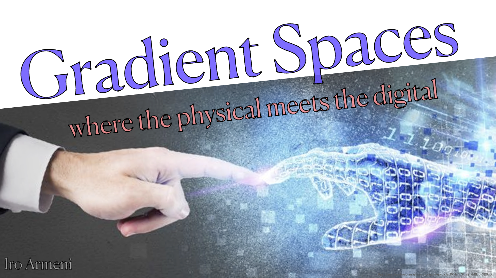

Photo credits: Rod Searcey
I am an assistant professor at the Department of Civil and Environmental Engineering, Stanford University, leading the Gradient Spaces group. I am interested in interdisciplinary research between Architecture, Civil Engineering, and Machine Perception. My area of focus is on developing quantitative and data-driven methods that learn from real-world visual data to generate, predict, and simulate new or renewed built environments that place the human in the center. My goal is to create sustainable, inclusive, and adaptive built environments that can support our current and future physical and digital needs.
As part of my research vision, I am particularly interested in creating spaces that blend from the 100% physical (real reality) to the 100% digital (virtual reality) and anything in between, with the use of Mixed Reality. To learn more about this vision, I wrote a short story to illustrate this future and the impact on designers. You can read it here:
A Day in the Life of an Architect in the Gradient World

Education: I concluded my postdoctoral research position at ETH Zurich on July 2023, at the departments of Civil, Env. and Geomatic Engineering and of Computer Science. I was working with Prof. Daniel Hall (Innovative and Industrial Construction), Prof. Catherine de Wolf (Circular Engineering for Architecture), and Prof. Marc Pollefeys, Computer Vision and Geometry Lab. I was also affiliated with the Design++ Center at ETHZ. Previously, I completed my PhD at Stanford University on August 2020, Civil and Environmental Engineering (CEE) Department, Sustainable Design and Construction (SDC) Program, with a PhD minor at the Computer Science Department. I conducted research under the supervision of Martin Fischer (CEE, Center for Integrated Facility Engineering - CIFE) and Silvio Savarese (CS, Stanford Vision and Learning Lab - SVL). Prior to my PhD, I received an MSc in Computer Science (Ionian University-2013), an MEng in Architecture and Digital Design (University of Tokyo-2011), and a Diploma in Architectural Engineering (National Technical University of Athens-2009). I have also worked as an architect and consultant for both the private and public sector.